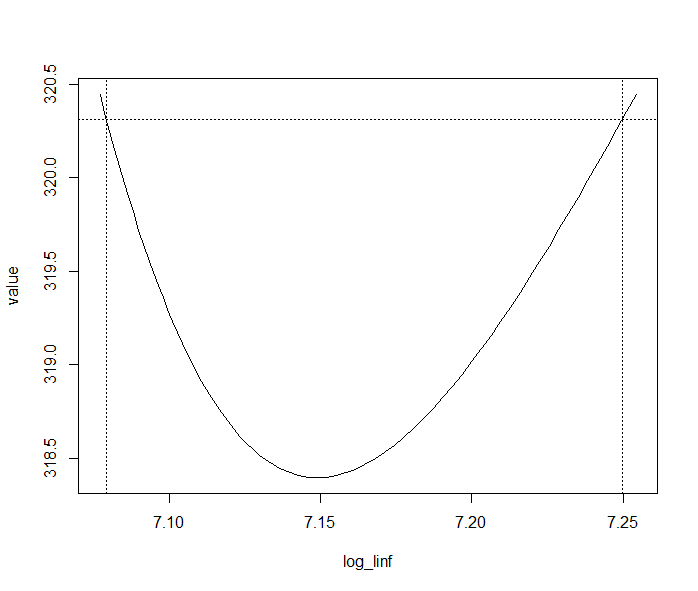

E.g., catchability for different survey gears, or year or location effects
One approach: base and offsets
Define one level (gear, year, location) as base estimate offsets for others. Formal parameters are the base and offsets
Two gears: estimate logq_gill and off_trap, where logq_gill is the log-scale gill net catchability. In your NLL function calculate logq_trap=logq_gill+offset
for year-effects, estimate YE_0, offsets for the nyears-1 other years. Then YE[1]=YE_0, and (i>1) YE[i]=YE_0+offset[i-1]
Alternative (and sometimes better) approach is through mean and deviations from mean
Slightly more tricky as for n levels you can estimate the mean and n-1 deviations. The level left out can be calculated from these also.
Thought experiment: suppose you are estimating selectivity-at-age and are working with 10 ages so you need sel[i], i=1 to 10.
You are willing to assume/define sel[10]=1. You want:
0<=sel[i]<=1
sel[i]<=sel[i+1]
My solution
Estimate “adjust_par” that determine “adjust” constrained between 0 and 1
Loop backwards from i=9 to i=1, with sel[i]=adjust[i]*sel[i+1]
Getting things set up
logit=function(x){log(x/(1-x));}inv_logit=function(x){1/(1+exp(-x));}# tr_adjust might be starting values of transformed adjuststr_adjust=rep(logit(.9),9);tr_adjust;
An interval that might contain the true value of a parameter (or other estimated quantity)
The confidence level is the probability that under repeated sampling the interval does contain the true value.
E.g., for a 95% CI, it is expected that 95% of intervals constructed in the same way will include the true value being estimated.
Asymptotic variance covariance matrix and Wald confidence intervals
The estimated variances for the parameter estimators are the diagonal elements from matrix, SEs are their square roots.
A Wald test assumes \(Z=\left(\hat{\theta}-\theta_{0}\right) / SE\) comes from a N(0,1) distribution, so one would expect \(Pr(|Z|>1.96)=0.05\)
One would reject \(H_0: \theta = \theta_0\) at the 0.05 level if \(|Z|>1.96\)
A Wald CI inverts a Wald test
Wald Confidence Interval
A \(100(1-\alpha) \%\) CI is: \(\hat{\theta} \pm \Phi^{-1}(1-\alpha / 2) S E\), \(\Phi\) is the CDF for a N(0,1) distribution, \(\Phi^{-1}\) is the inverse CDF or quantile function for N(0,1)
This is based on inverting a Wald test (i.e., find the Z values that just make the Wald test significant)
Special case - 95% CI: \(\hat{\theta} \pm 1.96 S E\)
Delta method
This is what ADREPORT uses to get variances for derived (non-parameters) quantities.
Formula for variance is just special case of this.
Main point is you can approximate variance of any function of parameters based on covariances of parameters and derivatives of function with respect to parameters
If you can get Variances (and hence SEs) you can get Wald CIs
Likelihood ratio test
Likelihood profile CI based on inverting a Likelihood Ratio test, with test statistic:
\(L R_r \sim X_{\nu}^{2}\) with \(\nu\) df (based on number of restrictions)
Of interest here is \(\underline{\theta} \in \underline{\Theta}_{0}\) with one parameter fixed, testing if that focal parameter differs from fixed value.
In this case \(\text{crit}=C D F_{X_{1}^{2}}^{-1}(1-\alpha)\)
Steps in Likelihood ratio test for one fixed parameter
Fit the full model and model with one focal parameter fixed, and extract likelihood (or log likelihood) from results and calculate the test statistic.
Find the critical value (it will always be 3.8415 if one parameter is fixed and your test is at the 0.05 level, otherwise use the chi-square quantile function).
Compare the test statistic with crit and declare significant if crit exceeded.
Likelihood profile CI steps
Fit the unrestricted model.
Repeatedly fit a restricted version of the model with the focal parameter fixed at a range of finely spaced values.
Find the upper and lower values (above and below the point estimate from the unrestricted model) that produce a significant likelihood ratio test.
Code to get likelihood profile CI
library(TMB); #load for CI
log_linf_prof = tmbprofile(obj,“log_linf”);
confint(log_linf_prof);
plot(log_linf_prof);

Coding issue
Once you load the TMB package, calls to MakeADFun() do not work unless they explicitly name the RTMB package as in:
RTMB::MakeADFun(…);
Limitation of likelihood profile CIs
In TMB for parameters only
Some have suggested constraining fit with penalty so desired values of derived quantities could be matched. Theory for this is not fully worked out and its not implemented.
After fitting (or before if you want to simulate from starting values)
simy=my_obj$simulate()$y
Common plan: (1) replace data model was fit to with simulated data, (2) refit the model to this copy and save pertinent results. Repeat 1&2 many times and summarize.
I will demo doing this for one data set and have you attempt to do a full simulation study.